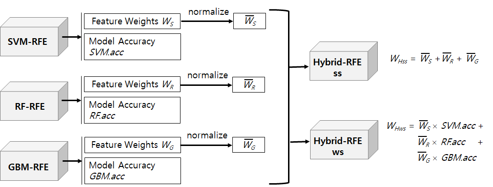

[Hybrid Recursive Feature Elimination]
1. introduction
As data size has increased nowadays, it is important to select optimal subset from original dataset to get a best performance of machine learning task. High dimensional datasets that have too many features can cause low performance of the task. Overfitting is a typical problem. Also, they have some problem such as shortage of space, requirement of high computing power, and low classification accuracy. Thus, it is necessary to select representative subset of features by efficient selection method. Many feature selection methods have been proposed. Recursive feature elimination (RFE) is one of them. This paper proposes a hybrid-recursive feature elimination. It combines feature importance-based recursive feature elimination using support vector machine (SVM), random forest (RF), and generalized boosted regression (GBM) algorithms. Figure 1 summarizes two types hybrid-RFE algorithm.
2. Download
- Source code of Hybrid-RFE library : hybrid_RFE.R
- Test code of Hybrid-RFE : test_hybrid_rfe.R
3. Basic Usage
- Install R software.
- Run R software.
- Install required R packages
- Run test code in R console.
※We assume all downloaded files are in 'D:\rworks' folder.
See the running result of test code here